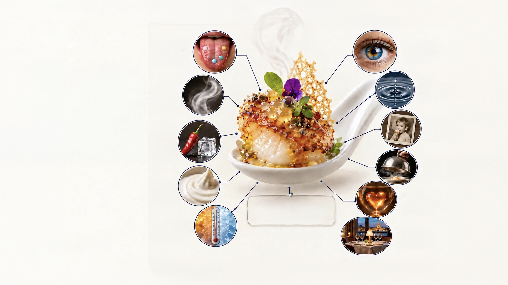
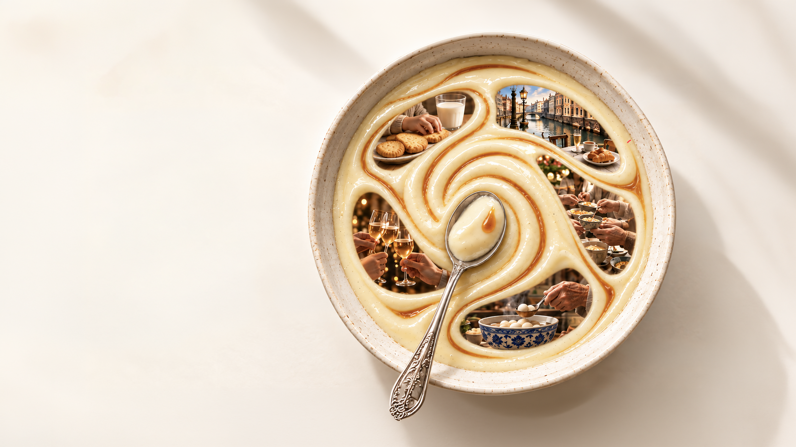
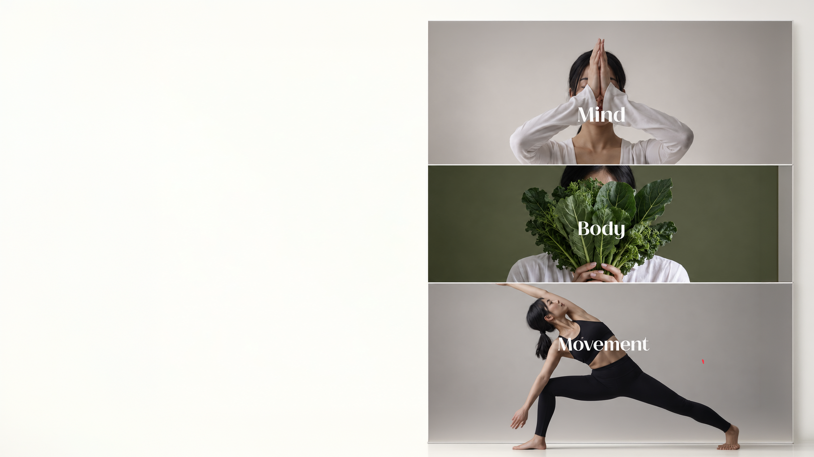
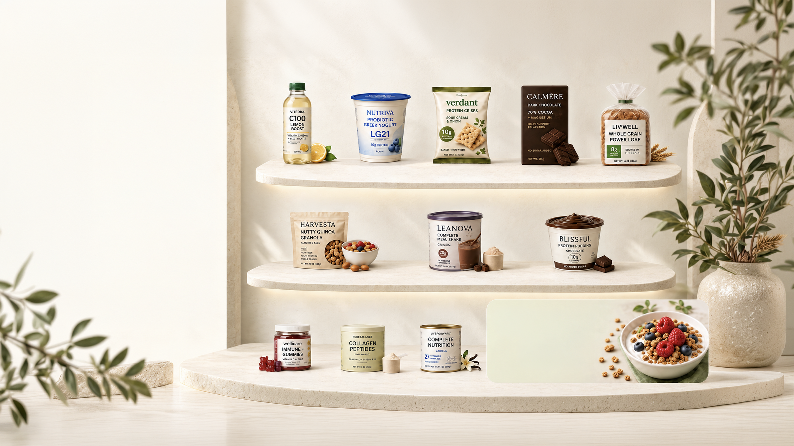
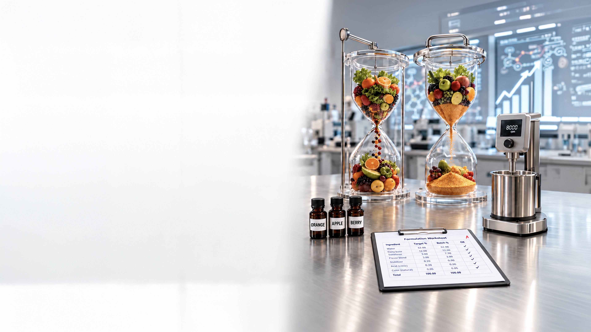
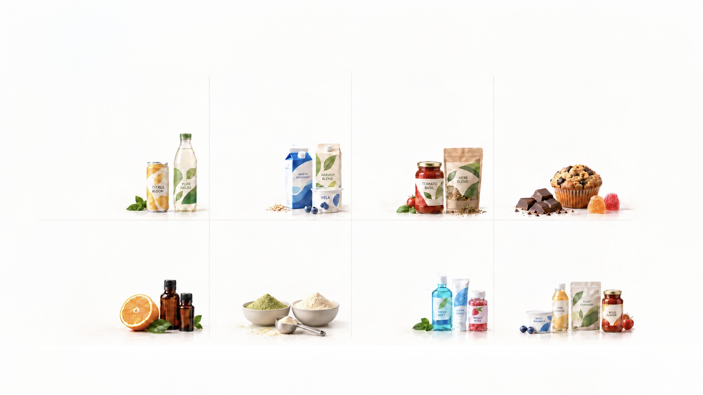

Collaboration
We work closely with you to understand your goals and co-create tailored flavor solutions.
Applied Solutions / Synesthetic Flavor
Flavor is more than taste.
It is a full human experience.
At Synesthetic Flavors, we explore how aroma, texture, temperature, memory and expectation come together to shape what people truly experience.
Flavor is more than taste.It is a full human experience.
At Synesthetic Flavors, we explore how aroma, texture,temperature, memory and expectation come togetherto shape what people truly experience.
SENSORY SCIENCE
SYNESTHETIC THINKING
APPLICATION EXPERTISE
01 / Culture & belonging
Flavor carries history,
emotion and belonging.
The foods and drinks we love are never only about ingredients. They carry places, people and moments that stay with us.
One taste can take us back.
CULTURALFlavor carries history,emotion and belonging.
The foods and drinks we love are never only aboutingredients. They carry places, people and momentsthat stay with us.
SENSORY SCIENCE
SYNESTHETIC THINKING
APPLICATION EXPERTISE
ONE TASTE CAN TAKE US BACK.
02 / A multisensory journey
What people taste is not a single sensation. It is a conversation between many senses.
HUMAN EXPERIENCE
TasteThe five basic tastes form the foundation of flavor.
What people taste is nota single sensation.It is a conversationbetween many senses.
HUMAN EXPERIENCEHUMAN EXPERIENCE
A MULTISENSORY JOURNEY
TasteThe five basic tastes form the foundation of flavor.

03 / Moments that stay
Some flavors disappear in seconds.
Some stay with us for a lifetime.
Flavor can carry childhood, travel, family, celebration and tradition. The most meaningful food and beverage experiences are the ones that people remember, return to and want to share.
Some flavors disappear in seconds.Some stay with us for a lifetime.
Flavor can carry childhood, travel,family, celebration and tradition.The most meaningful food andbeverage experiences are the onesthat people remember, return toand want to share.
Childhood
Travel
Family
Celebration
Tradition

Feeling good can begin with the senses.
When our senses are engaged, everyday moments can feel more balanced and uplifting.
Pleasant sensory experiences can support emotional balance and overall wellbeing.
We design food and beverage experiences that make good moments more enjoyable, repeatable and meaningful.
Enjoyment can support everyday wellness.
Feeling good can begin with the senses.
When our senses are engaged, everyday moments canfeel more balanced and uplifting.
Pleasant sensory experiences can support emotionalbalance and overall wellbeing.
We design food and beverage experiences that makegood moments more enjoyable, repeatable, and meaningful.
COMFORT
PLEASURE
REFRESHMENT
RELAXATION
MINDFULNESS
SATISFACTION
Enjoyment can support everyday wellness.
Function in everyday food and nutrition.
Functional foods are not limited to beverages. Opportunities span multiple everyday food and nutrition formats.
From dairy and snacks to soups, noodles, confectionery and meal replacement, function can be delivered through many enjoyable food experiences.

Science-backed benefits. Foods people enjoy. Better choices, every day.
Functional foods are not limitedto beverages. Opportunities spanmultiple everyday food andnutrition formats.
From dairy and snacks to soups,noodles, confectionery and mealreplacement, function can bedelivered through many enjoyablefood experiences.
1. FunctionalBeverages
Hydration, Energy,Focus
2. FunctionalDairy
Gut Health, Immune Support,Protein
3. FunctionalSnacks
Protein, Fiber,Better-for-You Ingredients
4. FunctionalConfectionery
Antioxidants, Mood,Better-for-You Indulgence
5. FunctionalBakery
Fiber, Whole Grains,Digestive Health
6. FunctionalCereals & Granola
Fiber, Protein, Whole Grains,Sustained Energy
7. FunctionalMeal Replacement
Convenience, Complete Nutrition,Weight Management
10. FunctionalDesserts
Protein, Indulgence,Better-for-You Treats
11. FunctionalGummies
Immune Support, Vitamins,Gamma Taste & Convenience
12. FunctionalPowders
Collagen, Recovery,Daily Wellness
13. HealthyAging Foods
Muscle, Bone, CognitiveHealth, Whole Wellness
Function in everydayfood and nutrition.
Science-backed benefits.Foods people enjoy.Better choices, every day.
The most memorable food and beverage experiences are never only consumed. They are felt, remembered and desired again.
Great taste becomes a moment.CREATE FLAVORS
A moment becomes memory.
The most memorable food and beverage experiencesare never only consumed.They are felt, remembered and desired again.
Refreshing
Comforting
Energizing
Relaxing
Uplifting
Indulgent
Satisfying
Nostalgic
Great taste becomes a moment.A moment becomes memory.CREATE FLAVORS

07 / Growing together
Building lasting value through insight, innovation and collaboration.
We work closely with you to understand your goals and co-create tailored flavor solutions.
Agile and customer-focused, we respond quickly to market changes and your evolving needs.
Our experts provide application guidance and technical assistance at every step.
We invest in relationships that drive sustainable growth and shared success.
Building lasting value through insight, innovation and collaboration.
We work closely with you to understandyour goals and co-create tailoredflavor solutions.
Agile and customer-focused, werespond quickly to market changesand your evolving needs.
Our experts provide applicationguidance and technical assistanceat every step.
We invest in relationships that drivesustainable growth and sharedsuccess.
More thana supplier.A developmentpartner.
We aim to build lasting partnershipsby connecting market insight,flavor design, technical supportand ingredient innovation in oneintegrated approach.
SAFETY.HEALTH.INNOVATION.
FROM INSIGHT TO EXPERIENCE.
PARTNERSHIP08 / From insight to experience
Flavor-forward solutions for refreshing, functional, and better-for-you beverages.
Creamy, clean-label flavors for dairy and plant-based applications across categories.
Bold and balanced flavors that elevate savory foods, sauces, and seasonings.
Delicious flavors for baked goods, chocolates, candies, and sweet creations.
Natural extracts and citrus solutions crafted for purity, consistency, and performance.
Science-backed ingredients that support wellness, nutrition, and performance.
Flavor and sensory solutions for toothpaste, mouthwash, gummies, and oral wellness applications.
Tailored solutions and application support to bring your product vision to life.

Flavor-forward solutionsfor refreshing, functional,and better-for-youbeverages.
Creamy, clean-label flavorsfor dairy and plant-basedapplications acrosscategories.
Bold and balanced flavorsthat elevate savory foods,sauces, and seasonings.
Delicious flavors for bakedgoods, chocolates, candies,and sweet creations.
Natural extracts and citrussolutions crafted for purity,consistency, andperformance.
Science-backed ingredientsthat support wellness, nutrition,and performance.
Flavor and sensory solutionsfor toothpaste, mouthwash,gummies, and oral wellnessapplications.
Tailored solutions and applicationsupport to bring your productvision to life.